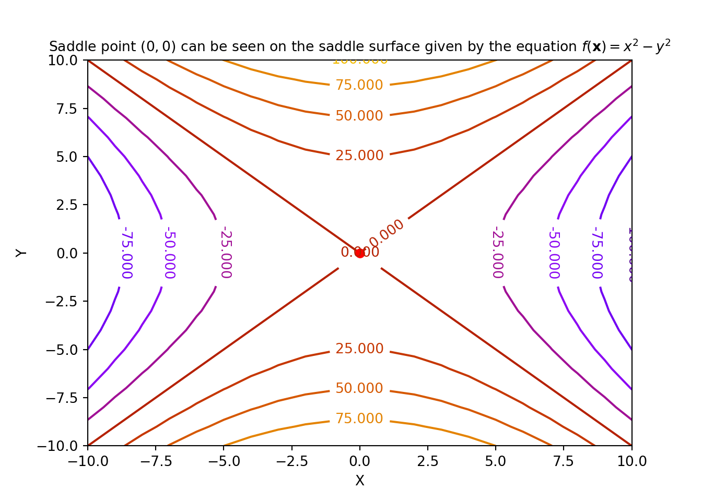
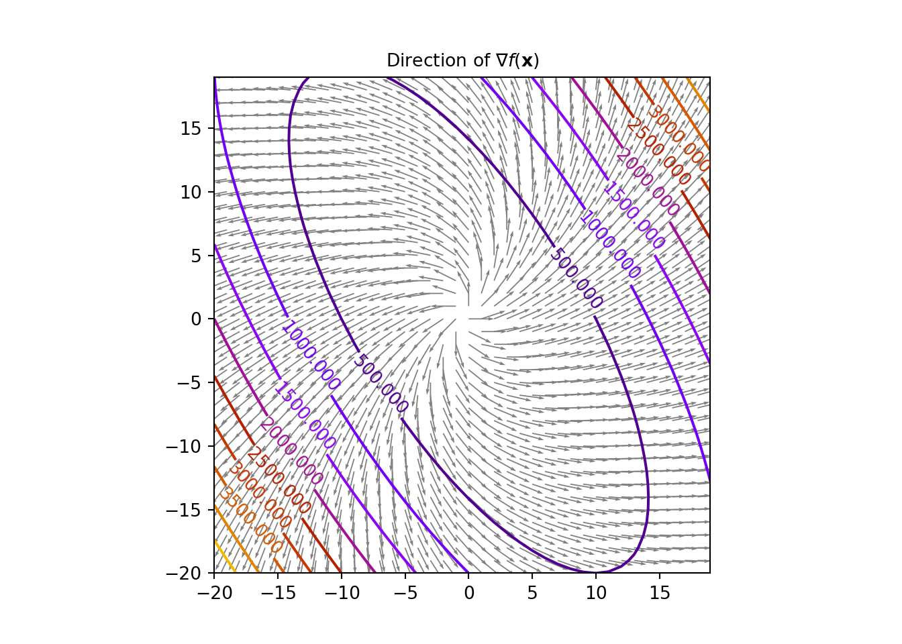

Introduction to Mathematical Optimization
with Python
2021-05-20
Chapter 1 What is Numerical Optimization?
This chapter gives an introduction to the basics of numerical optimization and will help build the tools required for our in-depth understanding in the later chapters. Some fundamental linear algebra concepts will be touched which will be required for further studies in optimization along with introduction to simple Python codes.
1.1 Introduction to Optimization
Let \(f(\mathbf{x})\) be a scalar function of a vector of variables \(\mathbf{x} = \begin{pmatrix}x_1 \\ x_2 \\ \vdots \\ x_n \end{pmatrix} \in \mathbb{R}^n\). Numerical Optimization is the minimization or maximization of this function \(f\) subject to constraints on \(\mathbf{x}\). This \(f\) is a scalar function of \(\mathbf{x}\), also known as the objective function and the continuous components \(x_i \in \mathbf{x}\) are called the decision variables.
The optimization problem is formulated in the following way:
\[\begin{align} &\!\min_{\mathbf{x} \in \mathbb{R}^n} &\qquad& f(\mathbf{x}) \\ &\text{subject to} & & g_k(\mathbf{x}) \leq 0,\ k=1,2,..., m\\ & & & h_k(\mathbf{x}) = 0,\ k=1,2,..., r\\ & & & m,r < n.\tag{1.1} \end{align}\]
Here, \(g_k(\mathbf{x})\) and \(h_k(\mathbf{x})\) are scalar functions too (like \(f(\mathbf{x})\)) and are called constraint functions. The constraint functions define some specific equations and/or inequalities that \(\mathbf{x}\) should satisfy.
1.2 A Solution
In case of a minimization problem, the optimum vector \(\mathbf{x^*}\) is referred to as the global minimizer of \(f\), and \(f\) attains the least possible value at \(\mathbf{x^*}\). To design an algorithm that finds out the global minimizer for a function is quite difficult, as in most cases we do not have the idea of the overall shape of \(f\). Mostly our knowledge is restricted to a local portion of \(f\).
Definition 1.5 For an objective function \(f(\mathbf{x})\) where, \(\mathbf{x} \in \mathbb{R}^2\), a point \(\mathbf{x}^s=\begin{bmatrix} x_1^s \\ x_2^s \end{bmatrix}\) is called a saddle point if \(\forall\ \mathbf{x}\), there exists an \(\epsilon>0\), such that the following conditions are satisfied:
- \(\frac{\partial f}{\partial x_1}(\mathbf{x}) \mid_{(x_1^s, x_2^s)} < \epsilon\),
- \(\frac{\partial f}{\partial x_2}(\mathbf{x}) \mid_{(x_1^s, x_2^s)} < \epsilon\), and
- \([\frac{\partial^2 f}{\partial x_1^2}(\mathbf{x}) \frac{\partial^2 f}{\partial x_2^2}(\mathbf{x}) - (\frac{\partial^2f}{\partial x_1 \partial x_2}(\mathbf{x}))^2]\mid_{(x_1^s, x_2^s)} < 0\)
An example of a saddle point is shown below:

1.3 Maximization
We just defined a minimization problem as our optimization task. We could do the same with a maximization problem with little tweaks. The problem \(\underset{\mathbf{x} \in \mathbb{R}^n}{max} f(\mathbf{x})\) can be formulated as: \[\begin{equation} \underset{\mathbf{x} \in \mathbb{R}^n}{max} f(\mathbf{x}) = - \underset{\mathbf{x} \in \mathbb{R}^n}{min}\{- f(\mathbf{x})\} \tag{1.2} \end{equation}\] We then apply any minimization technique after setting \(\hat{f}(\mathbf{x}) = - f(\mathbf{x})\). Further, for the inequality constraints for the maximization problem, given by \(g_k(\mathbf{x}) \geq 0\), we set \[\begin{equation} \hat{g}_k(\mathbf{x})=-g_k(\mathbf{x}) \tag{1.3} \end{equation}\]
The problem thus has become,
\[\begin{align} &\!\min_{\mathbf{x} \in \mathbb{R}^n} &\qquad& \hat{f}(\mathbf{x})\\ &\text{subject to} & & \hat{g}_k(\mathbf{x}) \leq 0,\ k=1,2,..., m\\ & & & h_k(\mathbf{x}) = 0,\ k=1,2,..., r\\ & & & m,r < n.\tag{1.4} \end{align}\]
After the solution \(\mathbf{x^*}\) is computed, the maximum value of the problem is given by: \(-\hat{f}(\mathbf{x^*})\).
1.4 Feasible Region
1.5 Discrete Optimization Problems
The above class of problems are also sometimes called integer programming problems. The fundamental characteristic of a discrete optimization problem is that, \(x_i\) is drawn from a countable set.
1.6 Linear Programming Problems
The class of optimization problems where both the objective function \(f(\mathbf{x})\) and the constraints are linear functions of the variable vector \(\mathbf{x}\), are called the linear programming problems.
A linear programming problem can be formulated in the following way:
\[\begin{align} &\!\min_{\mathbf{x} \in \mathbb{R}^n} &\qquad& f(\mathbf{x})=\mathbf{c}^T\mathbf{x},\\ &\text{subject to} & & \mathbf{A}\mathbf{x} \leq \mathbf{b},\\ & & & \mathbf{x} \geq \mathbf{0},\\ & & & \mathbf{c} \in \mathbb{R}^n, \mathbf{b} \in \mathbb{R}^m, \mathbf{A}\in \mathbb{R}^{m \times n}. \tag{1.5} \end{align}\]
1.7 Stochastic Optimization Problems
Some examples of stochastic optimization methods are: simulated annealing, quantum annealing, genetic algorithms, etc.
1.8 Scaling of Decision Variables
While formulating optimization problems, it must be guaranteed that the scale of the decision variables are approximately of the same order. If this is not taken care of, some optimization algorithms that are sensitive to scaling will perform poorly and will flounder to converge to the solution. Two of the fundamental fields that get disturbed due to poor scaling are computing the optimized step lengths and the numerical gradients. One of the widely accepted best practices is to make the decision variables dimensionless and vary them approximately between 0 and 1. One should always prefer optimization algorithms that are not sensitive to scaling.
1.9 Gradient Vector and Hessian Matrix of the Objective Function
Definition 1.9 For a differentiable objective function \(f(\mathbf{x}): \mathbb{R}^n \rightarrow \mathbb{R}\), its gradient vector given by \(\nabla f(\mathbf{x}): \mathbb{R}^n \rightarrow \mathbb{R}^n\), is defined at the point \(\mathbf{x}\) in the \(n\)-dimensional space as the vector of first order partial derivatives:
\[\begin{equation} \nabla f(\mathbf{x})= \begin{pmatrix} \frac{\partial f}{\partial x_1}(\mathbf{x})\\ \vdots \\ \frac{\partial f}{\partial x_n}(\mathbf{x}) \end{pmatrix}\tag{1.6} \end{equation}\]Now, if \(f(\mathbf{x})\) is smooth, the gradient vector \(\nabla f(\mathbf{x})\) is always perpendicular to the contours at the point \(\mathbf{x}\). The gradient vector is thus in the direction of the maximum increase of \(f(\mathbf{x})\). Look at the figure below.

One important relation that we will keep in mind is that the Hessian matrix is the Jacobian of the gradient vector of \(f(\mathbf{x})\), where the Jacobian matrix of a vector-valued function \(\mathbf{F}(\mathbf{x})\) is the matrix of all its first order partial derivatives, given by, \(\mathbf{JF}(\mathbf{x})= \begin{pmatrix} \frac{\partial \mathbf{F}}{\partial x_1} & \ldots \frac{\partial \mathbf{F}}{\partial x_n} \end{pmatrix}\). The relation is as followed: \[\begin{equation} \mathbf{H} f(\mathbf{x}) = \mathbf{J}(\nabla f(\mathbf{x})) \tag{1.8} \end{equation}\]
Let us consider an example now.
We will try to work out the same example with Python scripting now. For that we need an extra package called autograd [https://github.com/HIPS/autograd], besides the numpy[https://numpy.org/] package. The autograd package is used for automatically differentiating native Python and Numpy code. Fundamentally autograd is used in gradient-based optimization. First pip install the autograd package
Now, after it is downloaded, we type the following in our notebook:
import autograd.numpy as au
from autograd import grad, jacobian
p = np.array([1, 2, 3], dtype=float)
def f(x): # Objective function
return 2*x[0]*x[1]**3+3*x[1]**2*x[2]+x[2]**3*x[0]
grad_f = grad(f) # gradient of the objective function
hessian_f = jacobian(grad_f) # Hessian of the objective function
print("gradient vector:",grad_f(p))## gradient vector: [43. 60. 39.]## Hessian matrix:
## [[ 0. 24. 27.]
## [24. 42. 12.]
## [27. 12. 18.]]1.10 Directional Derivative of the Objective Function
Now for \(\mathbf{x} \in \mathbb{R}^n\), let us consider the differential equation: \[\begin{equation} df(\mathbf{x}) = \frac{\partial f(\mathbf{x})}{\partial x_1}dx_1 + \ldots + \frac{\partial f(\mathbf{x})}{\partial x_n}dx_n = \nabla^Tf(\mathbf{x})d\mathbf{x} = \langle \nabla f(\mathbf{x}), d\mathbf{x} \rangle \tag{1.10} \end{equation}\]
where \(\langle .,. \rangle\) denotes the dot product between two matrices and/or vectors. Now let us consider a function \(\hat{f}(\mathbf{x}) = f(\hat{\mathbf{x}} + \alpha \mathbf{\delta})\), such that for a point \(\mathbf{x}\) passing through the point \(\hat{\mathbf{x}}\) on the line through \(\hat{\mathbf{x}}\) in the direction \(\mathbf{\delta}\) is given by \(\mathbf{x}(\alpha) = \hat{\mathbf{x}} + \alpha \mathbf{\delta}\). now, for an infinitesimal change \(d\alpha\), we have \(d\mathbf{x}=\mathbf{\delta}d\alpha\). Thus, the differential at the point \(\mathbf{x}\) in the given direction is \(d\hat{f}=\nabla^Tf(\mathbf{x})\delta d\alpha\) So, the directional derivative now can be written as: \[\begin{equation} \frac{\partial f}{\partial \mathbf{\delta}}(\mathbf{x}) = \frac{d}{d\alpha}f(\mathbf{x}+\alpha\mathbf{\delta})|_{\alpha=0} = \nabla^Tf(\mathbf{x})\mathbf{\delta} \tag{1.11} \end{equation}\]
Now,let us look into a simple example:
autograd package to calculate the same using Python.
p = np.array([1, 2, 3], dtype=float)
delta = np.array([1, 3, 5], dtype=float)/np.sqrt(35)
def f(x):
return 2*x[0]*x[1]**3+3*x[1]**2*x[2]+x[2]**3*x[0]
grad_f = grad(f)
print("directional derivative:", grad_f(p).dot(delta))## directional derivative: 70.65489569530399We will see that the directional derivative is \(\approx 70.655\).
1.11 Positive Definite and Positive Semi-definite Matrices
Proof. If \(\lambda\) be an eigenvalue (real) of \(\mathbf{M}\) and \(\mathbf{v}\) be the corresponding eigenvector, then we have the following well known equation: \[\begin{equation} \mathbf{Mv}=\lambda\mathbf{v} \tag{1.14} \end{equation}\] Now multiplying the equation with \(\mathbf{v}^T\) on the left, we get the following:
\[\begin{align} \mathbf{v}^T\mathbf{Mv}&=\lambda\mathbf{v}^T\mathbf{v}\\ &=\lambda \|\mathbf{v}\|^2 \tag{1.15} \end{align}\]
Now the \(L.H.S\) is positive as \(\mathbf{M}\) is positive definite and \(\|bm{v}\|^2\) is positive too. This implies that the eigenvalue \(\lambda\) is positive.The above proof can be extended to positive semi-definite matrix too in which case the eigenvalues are non-negative, i.e, either 0 or positive and we will exploit these properties in our python script to check for positive definiteness or positive semi-definiteness of a given matrix.
Example 1.3 We use a Python script to compute the eigenvalues and check whether the following matrices are positive definite, positive semi-definite or negative-definite:
- \(\begin{pmatrix}2 & -1 & 0 \\ -1 & 2 & -1\\ 0 & -1 & 2 \end{pmatrix}\)
- \(\begin{pmatrix} -2 & 4\\ 4 & -8 \end{pmatrix}\)
- \(\begin{pmatrix} -2 & 2\\ 2 & -4 \end{pmatrix}\)
M = np.array(([2, -1, 0], [-1, 2, -1], [0, -1, 2]), dtype=float)
#M = np.array(([-2, 4], [4, -8]), dtype=float)
#M = np.array(([-2, 2], [2, -4]), dtype=float)
eigs = np.linalg.eigvals(M)
print("The eigenvalues of M:", eigs)## The eigenvalues of M: [3.41421356 2. 0.58578644]if (np.all(eigs>0)):
print("M is positive definite")
elif (np.all(eigs>=0)):
print("M is positive semi-definite")
else:
print("M is negative definite")## M is positive definiteRunning the script for the first matrix tells us that it is positive definite. The Reader is asked to try out the code for the other two matrices.
1.12 What is Convexity?
Definition 1.17 A constrained optimization problem is called a convex programming problem if the following properties are satisfied:
- the objective function \(f(\mathbf{x})\) is convex,
- the equality constraint functions \(h_k(\mathbf{x})\) are linear, and
- the inequality constraint functions \(g_k(\mathbf{x})\) are concave
This concept of convexity is used in practically solving many optimization problems in the real world. Now to test for convexity of \(f(\mathbf{x})\) we study the following two theorems:
1.13 Numerical Optimization Algorithms
Optimization Algorithms are iterative techniques that follow the following fundamental steps:
- Initialize with a guess of the decision variables \(\mathbf{x}\),
- Iterate through the process of generating a list of improving estimates,
- check whether the terminating conditions are met, and the estimates will be probably stop at the solution point \(\mathbf{x}^*\).
The book by Nocedal and Wright [Nocedal, Jorge, and Stephen Wright. Numerical optimization. Springer Science & Business Media, 2006.] states that most of the optimization strategies make use of either the objective function \(f(\mathbf{x})\), the constraint functions \(g(\mathbf{x})\) and \(h(\mathbf{x})\), the first or second derivatives of these said functions, information collected during previous iterations and/or local information gathered at the present point. As Nocedal and Wright mentions, a good optimization algorithm should have the following fundamental properties:
- Robustness: For all acceptable initial points chosen, the algorithm should operate well on a broad range of problems, in their particular class.
- Efficiency: The time complexity and the space complexity of the algorithm should be practicable
- Accuracy: The solution should be as precise as possible, with the caveat that it should not be too much delicate to errors in the data or to numerical rounding and/or truncating errors while it is being executed on a machine.
There might be some trade offs allowed between speed and memory, between speed and robustness, etc.